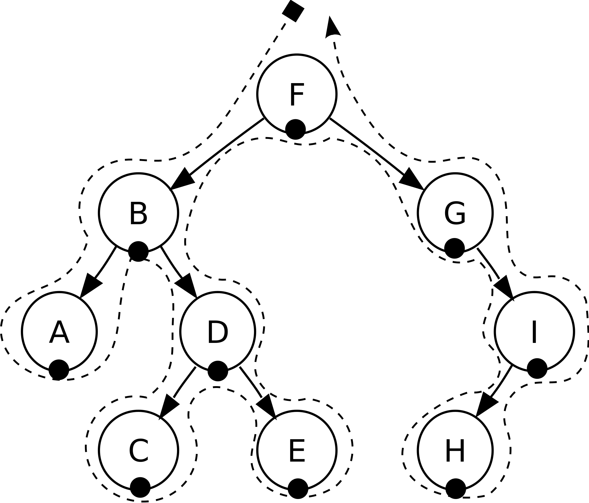
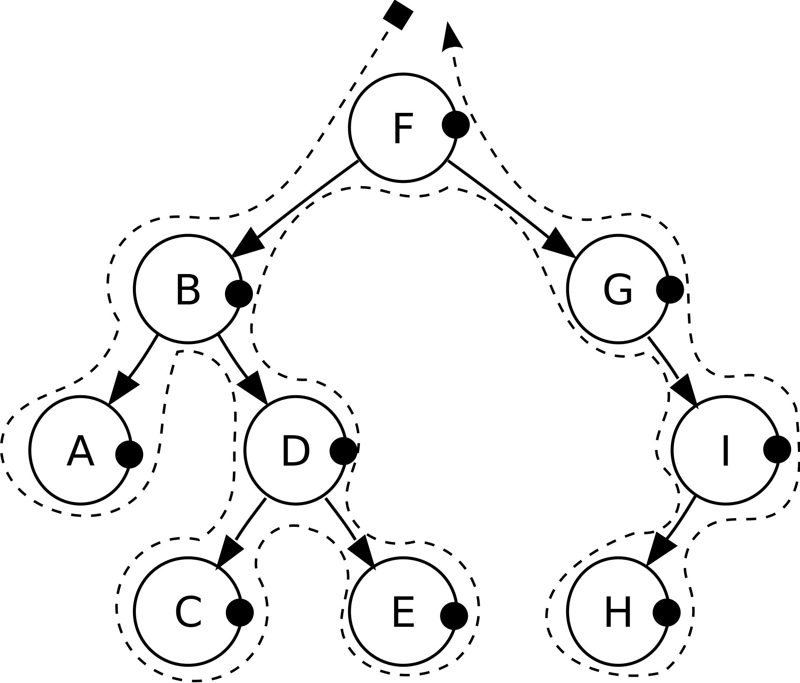
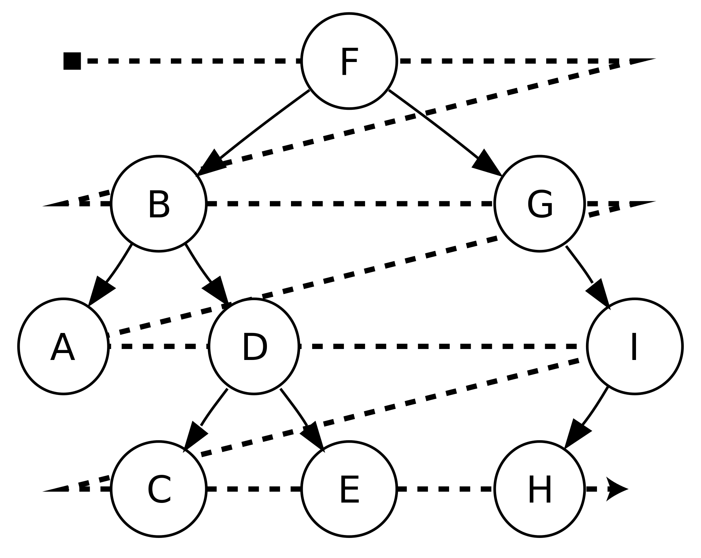

二叉树（Binary tree）是每个节点最多只有两个分支（即不存在分支度大于2的节点）的树结构。
树的遍历，指不重复地 访问树的所有节点的过程，具体的访问操作可能是检查节点值 、更新节点值 等。
定义节点类如下：
1 2 3 4 5 class TreeNode () : def __init__ (self, x) : self.val = x self.left = None self.right = None
1.深度优先 按照根节点，相对于左右子节点的访问顺序，可进一步划分如下。
1.1 前序遍历(Pre-Order Traversal)
定义：父节点 -> 左/右子树 -> 右/左子树。
递归方法：简洁 1 2 3 4 5 6 def preoder_traversal (root) : if root is None : return print(root.val) preoder_traversal(root.left) preoder_traversal(root.right)
非递归方法：避免栈溢出 1 2 3 4 5 6 7 8 9 10 11 12 def preoder_traversal (root) : if root is None : return stack = [] while stack or root is not None : while root is not None : print(root.val) stack.append(root) root = root.left root = stack.pop() root = root.right
1.2 中序遍历(In-Order Traversal)
定义：左/右子树 -> 父节点 -> 右/左子树, 即访问父节点时，其左子树已访问。
递归方法 1 2 3 4 5 6 def inoder_traversal (root) : if root is None : return inoder_traversal(root.left) print(root.val) inoder_traversal(root.right)
非递归方法 1 2 3 4 5 6 7 8 9 10 11 12 def inorder_traversal (root) : if root is None : return stack = [] while stack or root is not None : while root is not None : stack.append(root) root = root.left root = stack.pop() print(root.val) root = root.right

1.3 后序遍历(Post-OrderTraversal)
定义：左/右子树 -> 右/左子树 -> 父节点, 即访问父节点时，其左、右子树已访问。
递归方法 1 2 3 4 5 6 def postorder_traversal (root) : if root is None : return postorder_traversal(root.left) postorder_traversal(root.right) print(root.val)
非递归方法 1 2 3 4 5 6 7 8 9 10 11 12 13 14 def postorder_traversal (root) : if root is None : return stack = [] while stack or root is not None : while root is not None : stack.append(root) root = root.left if root.right is None : root = stack.pop() print(root.val) else : root = root.right

2.广度优先 二叉树的广度优先遍历又称按层次遍历.
1 2 3 4 5 6 7 8 9 10 11 12 13 14 def layer_traversal (root) : if root is None : return stack = [root] while stack: size = len(stack) for i in range(size): node = stack.pop(0 ) print(node.val) if node.left is not None : stack.append(node.left) if node.right is not None : stack.append(node.right)

二. 二叉搜索树
二叉搜索树（Binary Search Tree，BST）是一种常用的的二叉树，其定义为：二叉树中，任意节点的值大于等于左子树 所有节点的值，小于等于右子树 的所有节点的值；其最左/右侧的节点 为树中的最大/小值 。适用于 用二叉搜索树.
综合二叉搜索树“左小右大”的特性，可简化遍历/搜索 代码框架如下， 以preorder-traversal为例：
1 2 3 4 5 6 7 8 9 def BST (root, target) : if root is None : return if root.val == target: return print(root.val) if root.val < target: BST(root.right, target) if root.val > target: BST(root.left, target)
以下例举几个较为的特殊的例子。
1.判断BST的合法性 需要注意的是，根节点需要做的不只是和左、右子节点比较 ，而需要与整个左、右子树所有节点 比较。所以根节点需保存其子树的上下限值 。
1 2 3 4 5 6 7 8 9 def isBST (root, maximum, minimum) : if root is None : return True visit = root.val < maximum and root.val > minimum traversal_left = isBST(root.left, root.val, minimum) traversal_right = isBST(root.right, maximum, root.val) return visit and traversal_left and traversal_right
2.在BST中删除一个数 BST中树的删除分三种情况 ：1）删除无子树 的末端节点；2）删除仅有一个子树 的节点；3）删除有两个子树 的节点。
1 2 3 4 5 6 7 8 9 10 11 12 13 14 15 16 17 18 19 20 21 22 def deleteBST (root, target) : def get_min (node) : while node.left: node = node.left return node if root is None : return None if root.val == target: if root.left == None : return root.right if root.right == None : return root.left node = get_min(root.right) root.val = node.val root.right = deleteBST(root.right, root.val) if root.val > target: root.left = deleteBST(root.left, target) if root.val < target: root.right = deleteBST(root.right, target) return root
三. 用例 Leetcode 98. Validate Binary Search Tree Leetcode 103. Binary Tree Zigzag Level Order Traversal Leetcode 104. Maximum Depth of Binary Tree Leetcode 102. Binary Tree Level Order Traversal Leetcode 107. Binary Tree Level Order Traversal II Leetcode 110. Balanced Binary Tree Leetcode 124. Binary Tree Maximum Path Sum Leetcode 236. Lowest Common Ancestor of a Binary Tree Leetcode 450. Delete Node in a BST Leetcode 701. Insert into a Binary Search Tree
Leetcode中的两种常用写法 node传参：适用于，返回结果为node形式 1 2 3 4 5 6 7 8 9 10 class Solution (object) : def node_munipulation (self, root) : if root is None : return None root.left = self.node_munipulation(root.left) root.right = self.node_munipulation(root.right) return root
全局变量： 适用于其他情况 1 2 3 4 5 6 7 8 9 10 class Solution (object) : self.flag = False def node_munipulation (self, root) : if root is None : return self.flag = True self.node_munipulation(root.left) self.node_munipulation(root.right)
四. Reference Wiki: 树的遍历 Blog: 学习数据结构和算法的框架思维 Blog: 二叉树 Blog: 二叉搜索树操作集锦